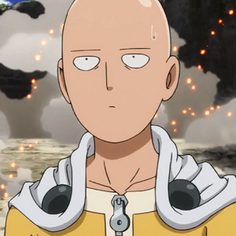

Sinopse:
A história se passa em cidades japonesas fictícias, especialmente na
chamada de Cidade Z, onde aparecem com grande frequência seres monstruosos que causam
vários desastres. Após treinar durante três anos, Saitama, o protagonista, se tornou um
herói não oficial incrivelmente forte que derrota monstros ou outros vilões com um único
soco. No entanto, devido à sua força esmagadora, Saitama tornou-se entediado e está
constantemente tentando encontrar adversários mais fortes que podem lutar de igual contra ele.
Em seus combates, ele conhece novos amigos, inimigos e o seu próprio discípulo, o ciborgue Genos,
onde posteriormente os dois entram na Associação dos Heróis, a fim de se tornarem heróis
oficiais e ganharem reconhecimento e respeito por todos os seus esforços para manter as cidades
a salvo. Apesar de derrotar seres extremamente fortes que até mesmo os maiores heróis da Associação
são incapazes de derrotar, Saitama é desrespeitado devido a sua aparência física simples, e alguns
o acusam de ser um herói falsificado. Apenas um pequeno número de indivíduos reconhecem seu incrível
talento e humildade com os outros.
Autor: One
Estúdio: Madhouse
Editor: Viz
Data de publicação: 3 de julho de 2009 – presente
| Temporada | Episódios |
| Temporada 1 | |
| Temporada 2 |
